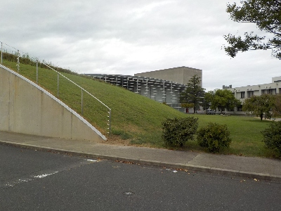
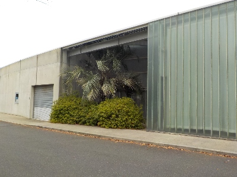

大社図書館は暑かったです。
2024/09/15

変わった形の大社図書館です。
この山は登っていいのかな？芝生が荒れるから立ち入り禁止かな？

図書館内はエアコンが効いてなくて暑かったです。移動式の冷風機がありましたが、それだけでは足りない感じでした。
早く涼しい気候になるといいですね。
出雲市大社町杵築南1338番地9
2024/09/15

変わった形の大社図書館です。
この山は登っていいのかな？芝生が荒れるから立ち入り禁止かな？

図書館内はエアコンが効いてなくて暑かったです。移動式の冷風機がありましたが、それだけでは足りない感じでした。
早く涼しい気候になるといいですね。